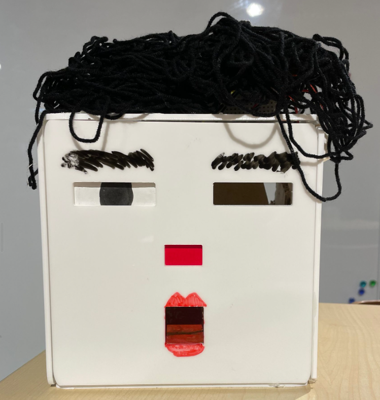

Recycle and Treat (Trick OR Treat)
コンタクトレンズの容器を5つ食べる(Recycle)と、ランダムにお菓子をくれる(Treat)
コンタクトレンズの容器のリサイクル率が全国で1％にとどまっているという事実がある。
その低リサイクル率を改善するために、回収システムとして、一つのリサイクルビンを提案した。
左目から容器を5個回収すると、口からランダムにお菓子が出てくる仕様になっている。
Recycle AND Treat
